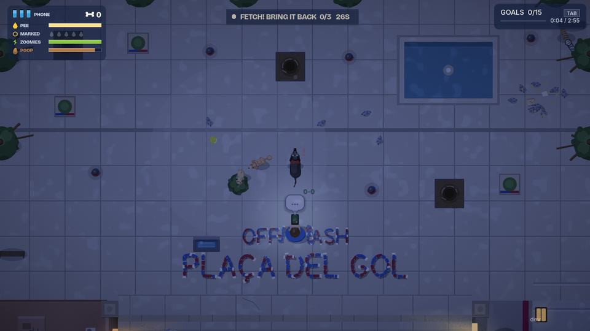

Dia de Partit
Match day at the stadium
Kickoff night along the wide avenue outside the stadium: blue-and-garnet scarf stalls, mounted police, kids playing keepy-uppy on the corner and rival away supporters marching past on the way to Plaça del Gol.
- Off-leash stop
- PLAÇA DEL GOL (Open plaça)
- Beat the clock
- Under 2:55
Screenshots



Goals (15)
- Mark 5 spots
- Have 4 good long sniffs
- Get the phone home without a scratch
- Get yourself home without a bump
- Get your business bagged
- Bring the ball back 3 times
- Scarf down 2 dropped snacks
- Keep your human out of the away march
- Bring the lost scarf back
- Score a goal in the kids' street game
- Beat the crowd home
- Snatch the sausage from under the police horses
- Spell LEASH
- Find the hidden pernil
- Beat the clock (under 2:55)